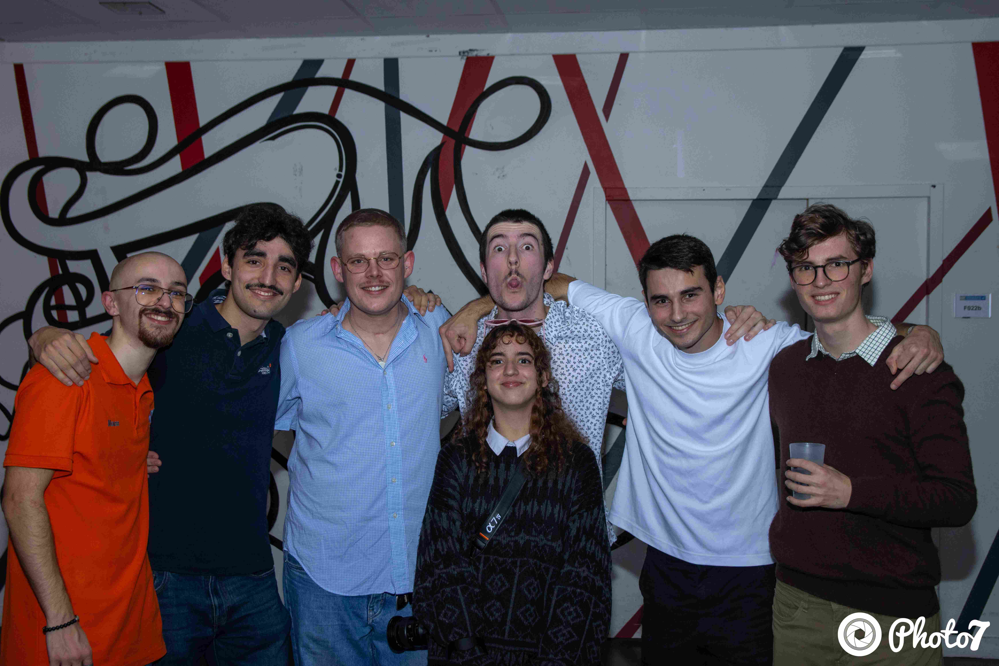
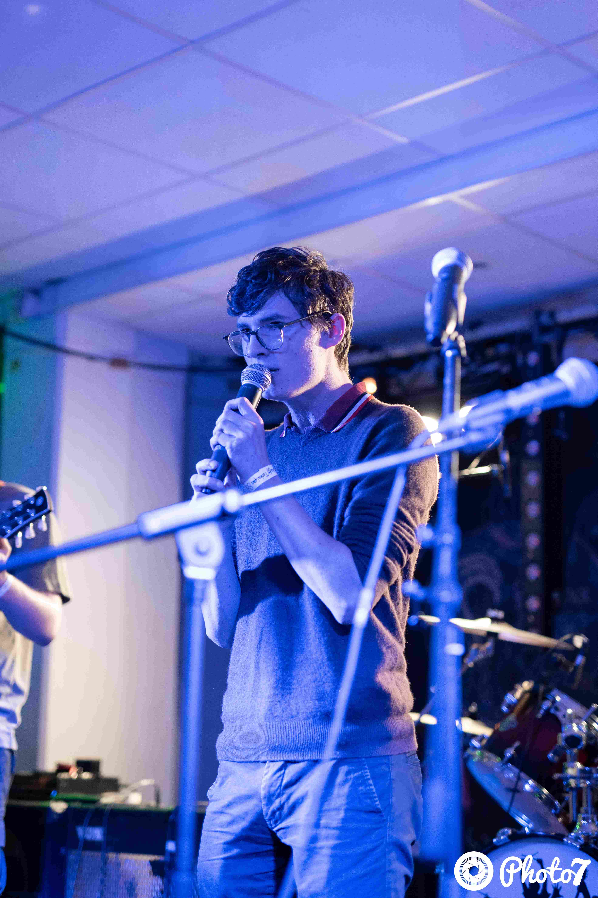

Joining the music association Club Zik in my school was one of the first things I did after joining ENSEEIHT to develop my passion.
As the lead singer of my band, I have had the opportunity to perform on stage during major student events. This role involves not only vocal performance but also coordination with other musicians (2 guitarists, drummer, bassist and pianist) and stage management.

It tooks weeks to prepare our setlist, which covers various genres of rock and pop. This experience has taught me a lot about teamwork, leadership, and managing stress in front of a large audience.